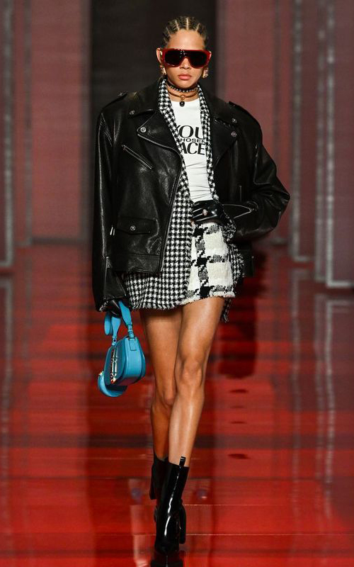
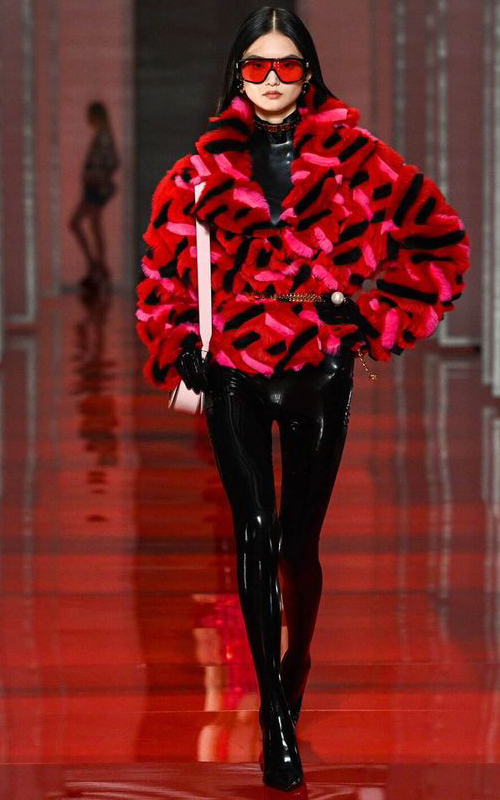

Pasarelas
Versace 2022
La nueva colección de Donatella Versace, presentada en directo en la Semana de la Moda de Milán, está inspirada en el emblemático fular de seda de la marca.
 «El fular es un componente fundamental de la herencia y el carácter de Versace. Hace de lienzo de nuestros emblemáticos estampados y se lleva de múltiples maneras: anudado para formar un top, en la cabeza o adornando un bolso. Es una forma de añadir un toque de espíritu Versace a cualquier look. El fular forma parte de la historia de la marca desde el principio, pero esta temporada se reinventa por completo y deja de ser fluido o etéreo para volverse provocativo, sexi y ceñido».
―Donatella Versace